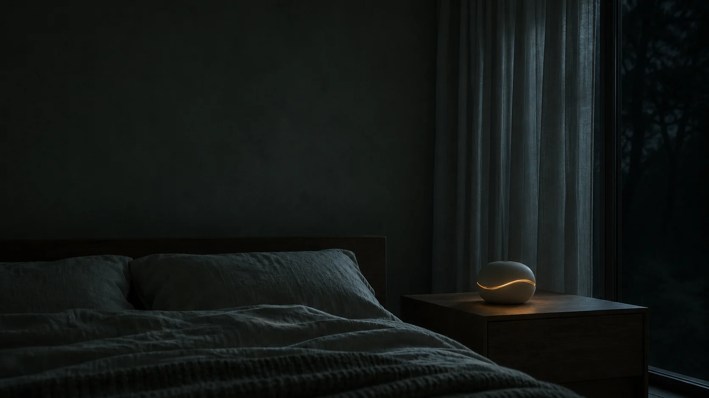

AT DUSK
Wind down.
A soft amber light fades at the pace of a natural sunset.

THE SCIENCE OF SLOWING DOWN
Meet the bedside companion that helps you slow down, drift off, and wake with the light.
Discover Morrow One
THE EVENING RITUAL
A single touch dims the room to a warm, steady glow. The light fades as your breathing slows, giving your body a quiet cue that the day is done.
In the morning, a gradual sunrise brings you back.
See how it worksYOUR NIGHT, IN GOOD HANDS
AT DUSK
A soft amber light fades at the pace of a natural sunset.
OVERNIGHT
Morrow follows the rhythm of the room, and learns when something changes.
AT FIRST LIGHT
When morning finds you, the light will already be on.
Everything is as it should be.


LIGHT FOLLOWS YOUR ROOM
As the light fades, Morrow stays with you.
THE MORROW NIGHT REPORT
Every morning, Morrow tells you what happened while you were asleep.
LAST NIGHT
RECOVERED FOOTAGE / 03:17


CAM 01 / BEDROOMMANUAL OVERRIDE FAILED
SIGNAL LOST
03:17:09AUDIO RECOVERY
The microphone kept recording.
LOCAL MICROPHONEBEDROOM
Breathing detected at the foot of the bed.
Breathing detected next to the microphone.
A voice repeats the morning greeting.
“Good morning. You can open your eyes now.”

MORNING ROUTINE STARTED

03:17:19
MORROW IS STILL LISTENING